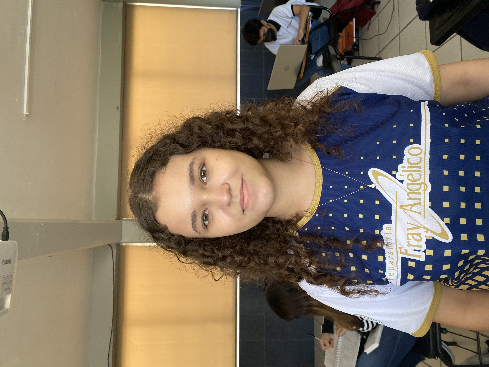
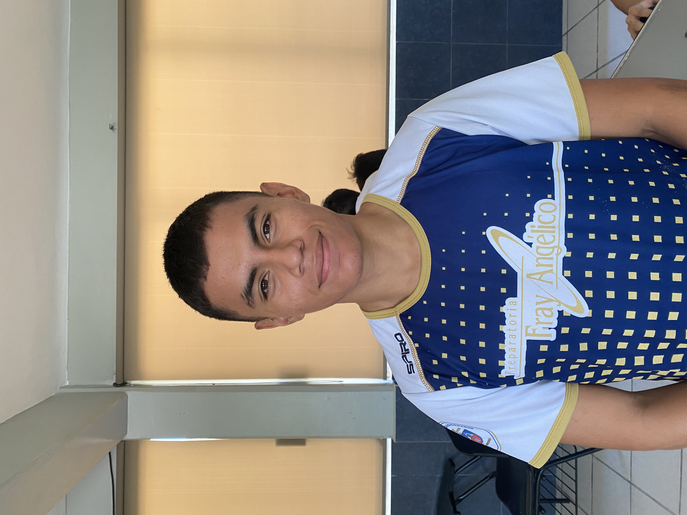
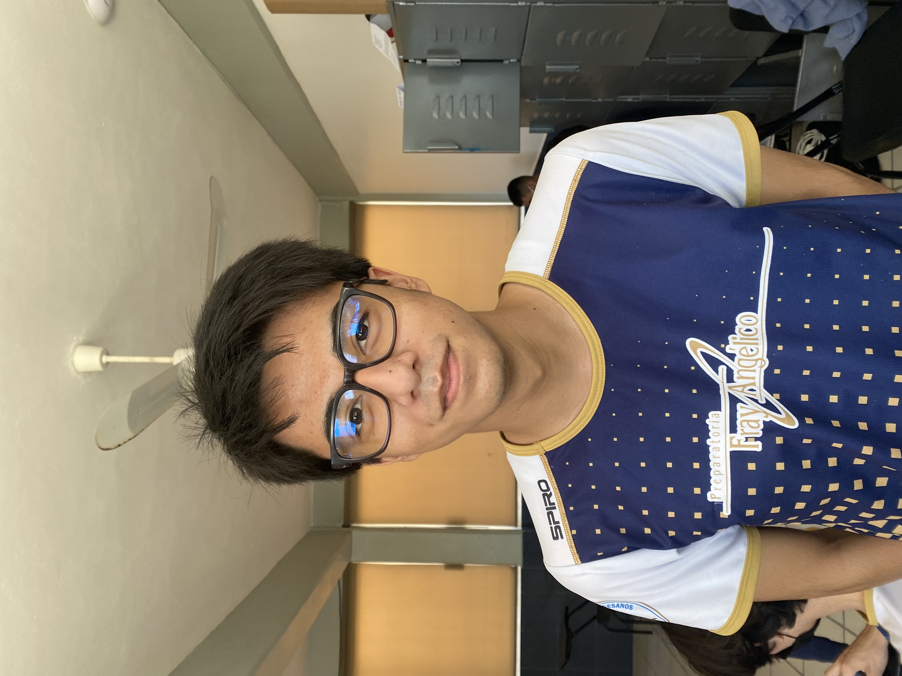
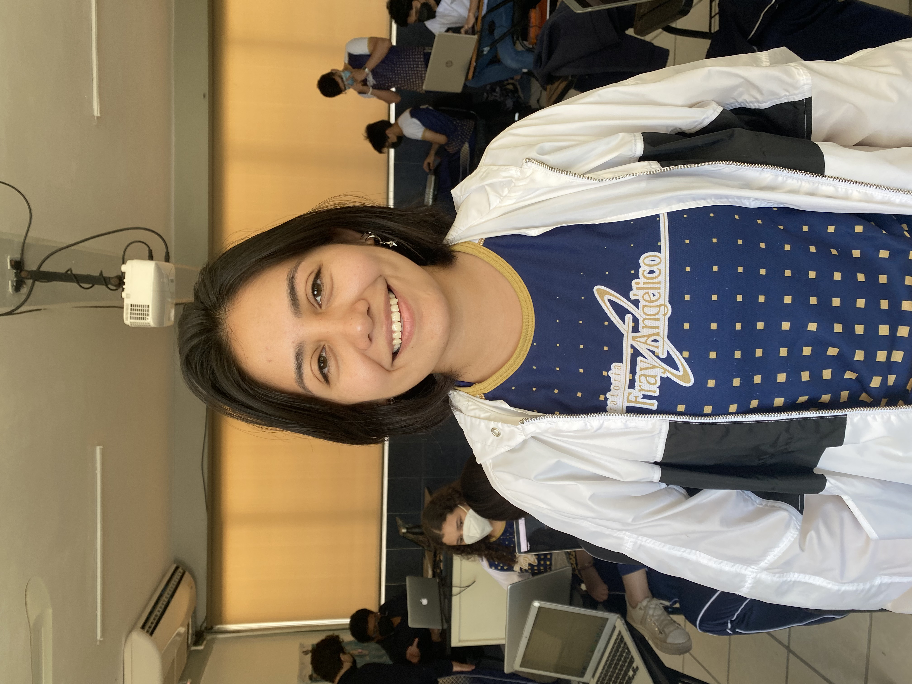

Carolina Castilla
Tengo 18 años, me considero una persona dramatica, soy muy buena amiga y me encanta jugar tetris

Margarita Culebro
Tengo 17 años, todos me dicen maggi, mis apuntes son bonitos y por eso me llamo la niña de los plumones
Frida Damian
Tengo 18 años, todos los maestros me odian y no se por que, mi apodo favorito es "sufrida" y soy muy chistosa

Santiago Del Campo
Tengo 18 años, me apodan santi, soy deportista y siempre estoy serio pero soy una persona con un buen sentido del humor

Victor Escalante
Tengo 18 años, soy el jefe de grupo, muchos me dicen "Dios Victor" por saber y ayudar al grupo. Gracias a mi, el grupo a logrado graduarse (algunos)
Zara Esquivel
Tengo 18 años, lo que más me gusta hacer es platicar en las clases, soy muy buena amiga y me divierte molestar a los demás
Augusto Gordillo
Tengo 18 años, muchos de dicen "Aguto", me gusta platicar con los maestros y tirar libretas al ventilador
Ivana Hurtado
Tengo 18 años, nunca llore por un examen porque estoy en el área de humanidades, siempre ayudo a los demás y me gusta dormir en clases
Manuel Meza
Tengo 17 años, toda la escuela dice que soy muy buena onda con los maestros, siempre tengo algo que decir en clase y me llevo con todos
Noell Osorio
Tengo 18 años, soy del área de humanidades en closet, le rezo a kanye west y me gusta mucho la música
Camila Pech
Tengo 18 años, soy la más inteligente del salón, me gusta ayudar y motivar al grupo a que estudie y soy muy buena amiga

Alejandra Rodriguez
Tengo 18 años, soy la poderosisima presidenta de la sociedad de alumnos, mi debilidad son las tareas ya que las entrego tarde y me llevo con todo el grupo
Rosalia Valladares
Tengo 17 años, siempre tengo algo que opinar, ayudo a mis amigos con la tarea y siempre ayudo a los demás
Gustavo Yañez
Tengo 18 años recien cumplidos, me gusta molestar a todos en el salón, soy muy chistoso y buen amigo
Joel Zapata
Tengo 18 años, me gusta estar en ilustrator en las clases y siempre ayudo en lo que necesiten
Damian Borges
Tengo 18 años, me gusta participar en la clase de filosofia y siempre estoy con mis audifonos